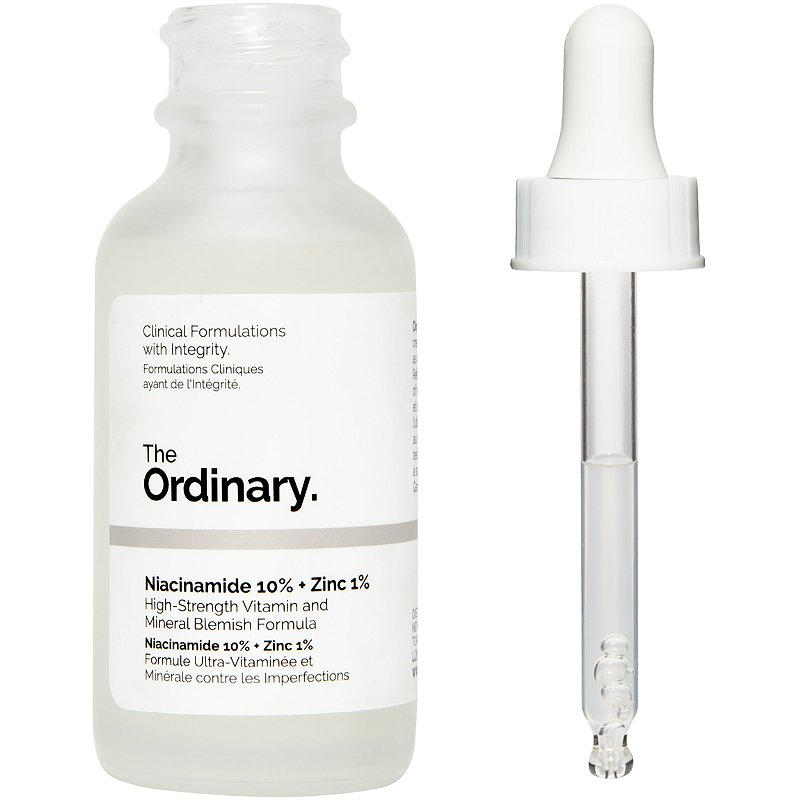

Niacinamide 10% + Zinc 1%
A dream come true for oily skin, this potent serum targets breakouts, minimises pores and decongests confused complexions by regulating sebum production. Featuring high concentrations of two of the most efficacious blemish-battling ingredients out there (niacinamide and zinc), this swiftly soothes skin and improves its overall health. Niacinamide (Vitamin B3) is indicated to reduce the appearance of skin blemishes and congestion. A high 10% concentration of this vitamin is supported in the formula by zinc salt of pyrrolidone carboxylic acid to balance visible aspects of sebum activity.
Harnessing the (anything but ordinary) power of niacinamide and zinc – with a surprisingly small price tag – this potent serum is perfect for combatting blemishes, enlarged pores and uneven skin tone. A must-have for battling breakouts, The Ordinary’s Niacinamide 10% + Zinc 1% regulates sebum production to minimise pores and reduce blemish-causing bacteria, keeping your complexion clear, calm and collected. A superlative skin improver, niacinamide boosts the skin’s immunity and improves moisture retention, while a brilliant shot of zinc PCA works to repair damaged skin and promote the creation of collagen.
ONLY IDR 275K, try it yourself! ♡
Niacinamide 10% + Zinc 1%

with 1% pure retinol